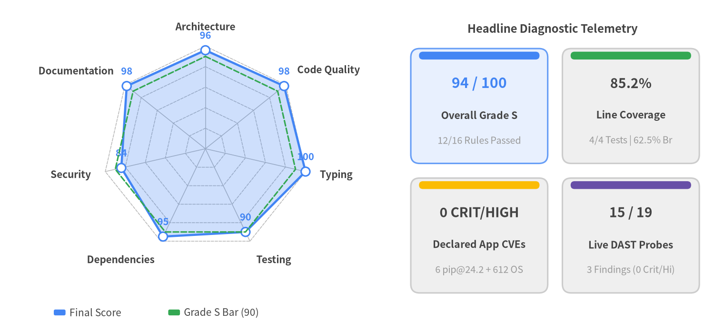
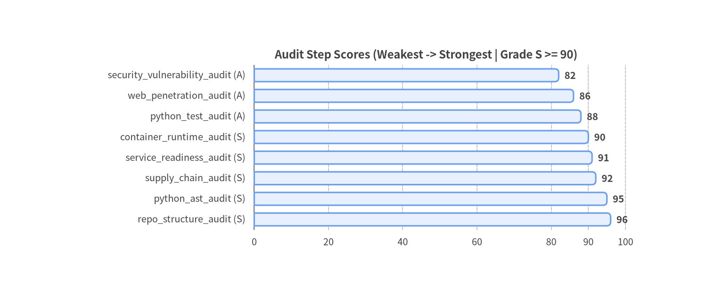
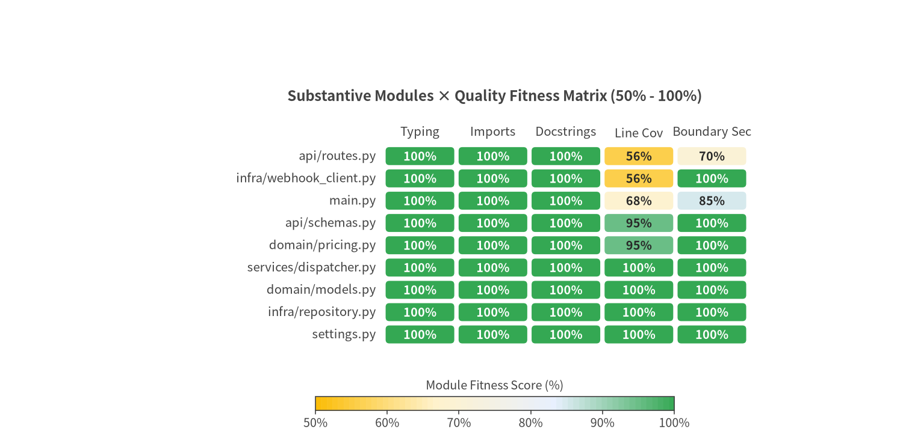
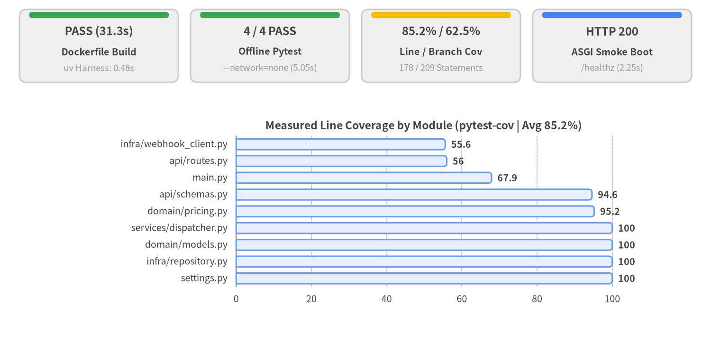
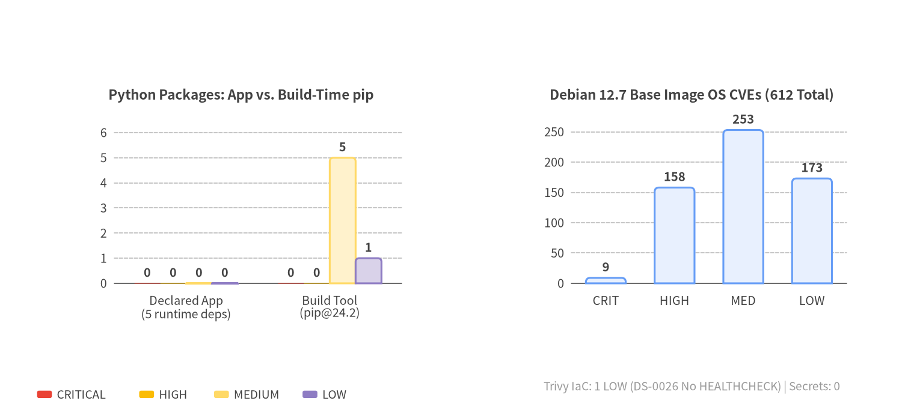
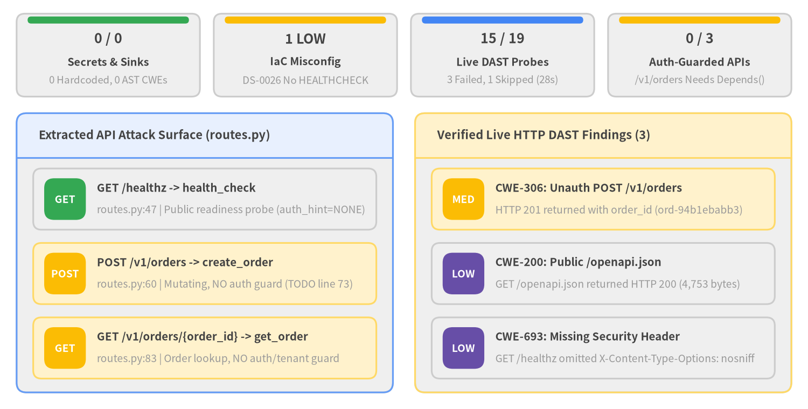

PNI Software Health Diagnostic Report
Target Repository: order-dispatch (examples/python/api_fastapi_clean) — Python 3.11+ Async FastAPI + Pydantic v2 Order Fulfillment Microservice

Source Code
from drawlib.canvas import save, setup
from drawlib.shapes import rectangle
from drawlib.smartarts import KpiCards, Panel
from drawlib.styles import Styles
from drawlib.text import text
from drawlib.utils import draw_pni_logo
setup(width=146, height=64, dpi=150)
panel = Panel(
"",
"",
style=Styles.Neutral.patch(shape_r=2.0),
header_style=Styles.PrimaryFlat.patch(shape_r=2.0),
text_style=Styles.WhiteBold.patch(text_size=13.5),
header_height=16.0,
header_align="left",
)
panel.draw((2.0, 2.0), width=142.0, height=60.0)
text(
(6.5, 56.8),
"PNI501 Software Health Audit — order-dispatch",
style=Styles.WhiteBold.patch(text_size=13.5, halign="left"),
)
text(
(6.5, 50.8),
"examples/python/api_fastapi_clean | FastAPI + Pydantic v2 | Run wf-f819234f",
style=Styles.White.patch(text_size=9.8, halign="left"),
)
# Official PNI501 emblem positioned on the right of the dark primary header
draw_pni_logo((135.5, 54.0), width=8.5, dark=True)
cards = KpiCards(
style=Styles.Neutral.patch(shape_r=1.8),
metric_style=Styles.DarkBold.patch(text_size=14.0),
text_style=Styles.DarkBold.patch(text_size=10.5),
description_style=Styles.Muted.patch(text_size=9.5),
accent_style=Styles.PrimaryFlat,
accent_position="top_bar",
metric_layout="top_stack",
spacing=3.0,
)
cards.add(
"94 / 100",
"Grade S",
"7-Axis Composite Score",
style=Styles.PrimaryNeutral.patch(shape_r=1.8),
metric_style=Styles.PrimaryBold.patch(text_size=15.0),
accent_style=Styles.PrimaryFlat,
)
cards.add(
"12 / 16",
"Rule Pass Rate",
"0 FAIL | 4 WARN | 12 PASS",
accent_style=Styles.SuccessFlat,
)
cards.add(
"4 / 4",
"Docker Tests",
"85.2% Line | 62.5% Branch",
accent_style=Styles.SecondaryFlat,
)
cards.add(
"0 CRIT/HIGH",
"Declared App CVEs",
"3 Med / 9 Low Total Findings",
accent_style=Styles.WarningFlat,
)
cards.draw((6.0, 15.0), width=134.0, height=28.0, columns=4)
rectangle(
(73.0, 8.0),
width=134.0,
height=7.5,
style=Styles.PrimaryNeutral.patch(shape_r=1.2),
)
text(
(73.0, 8.0),
"Python >=3.11 (uv) | 4-Layer Clean Architecture | Trivy SCA + Live HTTP DAST (15/19 Probes) | 2026-11-22 UTC",
style=Styles.Dark.patch(text_size=9.8),
)
save()
| Audit Attribute | Verified Value |
|---|---|
| Project / Target Path | order-dispatch (examples/python/api_fastapi_clean) |
| Primary Language & Stack | python (>=3.11, uv_build + uv.lock, FastAPI >=0.115.0, Pydantic v2, httpx, Uvicorn) |
| Runtime Archetype | web_api, library (14 source modules, 435 LOC, 3 test files) |
| Workflow ID / Run ID | py_api_fastapi_clean / wf-f819234f (PNI Workflow v2, scope=repo) |
| Evaluated At (UTC) | 2026-11-22T11:29:00.803894+00:00 (main@d1e02277, dirty) |
| Overall Score & Grade | 94 / 100 (Grade S) — 12/16 rules passed (0 FAIL, 4 WARN, 12 PASS) |
| Container Runtime Verification | passed — Dockerfile & uv harness built, 4/4 offline tests (--network=none), 85.2% line cov, /healthz -> 200 |
| Security & Penetration Posture | Trivy passed (0 declared app CRIT/HIGH, 0 secrets, 0 AST sinks) · Live DAST 15/19 probes (3 findings) |
1. Executive Summary
order-dispatch achieves Grade S (94/100) as a clean Python 3.11+ FastAPI and Pydantic v2 microservice benchmark: 100% type safety, import hygiene, and Google-style docstring coverage, strict acyclic 4-layer Clean Architecture, 4/4 passing offline Docker tests (85.2% line coverage and clean /healthz ASGI boot), zero declared application CVEs, and SHA-pinned OpenSSF CI governance. Live HTTP DAST and Trivy container image inspection pinpointed four concrete production hardening targets: enforcing OAuth2/JWT authentication on /v1/orders (CWE-306), refreshing python:3.12.6-slim-bookworm into a pip-free multi-stage build with HEALTHCHECK, adding HTTP security headers while gating /openapi.json in production, and raising TestClient/MockTransport branch coverage from 62.5% above 80%.

Source Code
from drawlib.canvas import save, setup
from drawlib.charts.radar import RadarChart
from drawlib.smartarts import KpiCards
from drawlib.styles import Styles
from drawlib.text import text
setup(width=146, height=68, dpi=150)
radar = RadarChart(
categories=[
"Architecture",
"Code Quality",
"Typing",
"Testing",
"Dependencies",
"Security",
"Documentation",
],
axis_line_style=Styles.MutedThin,
radius=21.0,
min_value=0.0,
max_value=100.0,
levels=5,
grid_shape="polygon",
axis_text_style=Styles.DarkBold.patch(text_size=10.0),
grid_style=Styles.MutedDashedThin,
scale_text_style=Styles.Transparent,
value_text_style=Styles.PrimaryBold.patch(text_size=9.8),
value_format="{:.0f}",
)
radar.add_series(
"Final Score",
[96, 98, 100, 90, 95, 84, 98],
style=Styles.PrimaryFlat,
fill_alpha=0.26,
line_width=2.2,
point_size=0.9,
)
radar.add_series(
"Grade S Bar (90)",
[90, 90, 90, 90, 90, 90, 90],
style=Styles.SuccessDashed,
fill_alpha=0.0,
line_width=1.4,
point_size=0.0,
)
radar.draw((42.0, 37.5), align="center")
radar.draw_legend(
(11.0, 4.0),
text_style=Styles.Dark.patch(text_size=10.0),
orientation="horizontal",
item_gap=7.0,
)
text((113.0, 62.0), "Headline Diagnostic Telemetry", style=Styles.DarkBold.patch(text_size=11.5))
kpis = KpiCards(
style=Styles.Neutral.patch(shape_r=1.8),
metric_style=Styles.DarkBold.patch(text_size=13.5),
text_style=Styles.DarkBold.patch(text_size=10.2),
description_style=Styles.Muted.patch(text_size=9.5),
accent_style=Styles.PrimaryFlat,
accent_position="top_bar",
metric_layout="top_stack",
spacing=3.0,
)
kpis.add(
"94 / 100",
"Overall Grade S",
"12/16 Rules Passed",
style=Styles.PrimaryNeutral.patch(shape_r=1.8),
metric_style=Styles.PrimaryBold.patch(text_size=14.5),
accent_style=Styles.PrimaryFlat,
)
kpis.add(
"85.2%",
"Line Coverage",
"4/4 Tests | 62.5% Br",
accent_style=Styles.SuccessFlat,
)
kpis.add(
"0 CRIT/HIGH",
"Declared App CVEs",
"6 pip@24.2 + 612 OS",
accent_style=Styles.WarningFlat,
)
kpis.add(
"15 / 19",
"Live DAST Probes",
"3 Findings (0 Crit/Hi)",
accent_style=Styles.SecondaryFlat,
)
kpis.draw((84.0, 8.0), width=59.0, height=50.0, columns=2)
save()
Key Strengths vs. Top Production Hardening Risks
The codebase excels in static maintainability, typing discipline, container build reproducibility, and CI supply-chain governance. All three MEDIUM findings and nine LOW findings (after AI triage reclassified five unreachable build-time pip@24.2 CVEs) concentrate on deployment-boundary security and HTTP integration test coverage rather than structural defects.

Source Code
from drawlib.canvas import save, setup
from drawlib.smartarts import CardList, Panel
from drawlib.styles import Styles
setup(width=146, height=68, dpi=150)
left_panel = Panel(
"Verified Engineering Strengths",
style=Styles.Neutral.patch(shape_r=2.0),
header_style=Styles.SuccessNeutral.patch(shape_r=2.0),
text_style=Styles.DarkBold.patch(text_size=11.5),
header_height=9.0,
)
left_panel.draw((2.0, 2.0), width=69.0, height=64.0)
strengths = CardList(
style=Styles.Neutral.patch(shape_r=1.5),
text_style=Styles.DarkBold.patch(text_size=10.0),
description_style=Styles.Muted.patch(text_size=9.5),
badge_shape="rounded_rect",
badge_style=Styles.SuccessFlat,
badge_text_style=Styles.WhiteBold.patch(text_size=9.5),
spacing=2.2,
)
strengths.add(
"Strict 4-Layer Acyclic Architecture",
"api -> services -> domain + infra; 0 cycles, pure domain",
badge_text="ARCH",
)
strengths.add(
"100% Typing, Imports & Docstrings",
"py.typed, zero Any, 0 complex functions across 435 LOC",
badge_text="CODE",
)
strengths.add(
"OpenSSF CI & Non-Root Governance",
"SHA-pinned Actions, contents: read, uv.lock, uid 10001",
badge_text="CI",
)
strengths.add(
"Offline Docker Build & 4/4 Tests",
"85.2% line cov (100% core), clean /healthz ASGI boot",
badge_text="TEST",
)
strengths.draw((5.0, 5.0), width=63.0, height=50.0)
right_panel = Panel(
"Top Production Hardening Targets",
style=Styles.Neutral.patch(shape_r=2.0),
header_style=Styles.WarningNeutral.patch(shape_r=2.0),
text_style=Styles.DarkBold.patch(text_size=11.5),
header_height=9.0,
)
right_panel.draw((75.0, 2.0), width=69.0, height=64.0)
risks = CardList(
style=Styles.Neutral.patch(shape_r=1.5),
text_style=Styles.DarkBold.patch(text_size=10.0),
description_style=Styles.Muted.patch(text_size=9.2),
badge_shape="rounded_rect",
badge_style=Styles.WarningFlat,
badge_text_style=Styles.WhiteBold.patch(text_size=9.5),
spacing=2.8,
)
risks.add(
"Unauthenticated /v1/orders (CWE-306)",
"POST /v1/orders -> HTTP 201 (routes.py:73 TODO)",
badge_text="MED",
style=Styles.WarningNeutral.patch(shape_r=1.5),
)
risks.add(
"Aged Debian 12.7 Base & pip@24.2",
"9 CRIT/158 HIGH OS, 6 pip CVEs, no HEALTHCHECK",
badge_text="MED",
style=Styles.WarningNeutral.patch(shape_r=1.5),
)
risks.add(
"DAST Headers, OpenAPI & Branch Cov",
"CWE-693/200 gaps; routes/webhook 62.5% branch",
badge_text="LOW",
badge_style=Styles.SecondaryFlat,
)
risks.draw((78.0, 6.0), width=63.0, height=48.0)
save()
Diagnostic Scorecard Snapshot
| Evaluation Area | Measured Result | Summary |
|---|---|---|
| Overall Composite Score | 94 / 100 (Grade S) | 12/16 rules PASS, 4/16 WARN, 0 FAIL |
| 7-Axis Profile | Arch 96, Qual 98, Type 100, Test 90, Deps 95, Sec 84, Doc 98 |
Six axes at Grade S (>=90); Security (84) is the primary uplift lever |
| Lowest-Scoring Audit Steps | security_vulnerability_audit (82, A), web_penetration_audit (86, A), python_test_audit (88, A) |
Concentrated on base-image CVEs, unauthenticated /v1/orders, and branch coverage |
| Findings by Severity | 0 Critical, 0 High, 3 Medium, 9 Low |
6 deterministic + 6 AI qualitative (5 build-time pip@24.2 CVEs reclassified to low) |
| Container Runtime Verification | passed (4/4 tests, 85.2% line / 62.5% branch, /healthz -> 200) |
Built both project Dockerfile (31.33s) and uv harness (0.48s); offline --network=none |
| Trivy Security & Live DAST | Trivy passed (0 app CRIT/HIGH, 1 IaC DS-0026, 0 secrets) · DAST 15/19 probes |
Zero critical/high exploits; verified CWE-306, CWE-200, and CWE-693 live |
| Approved Audit Scope & Plan | Auto-approved (plan_gate=false) |
Full repo audit covering src, tests, README.md, Dockerfile, and live ASGI container |
2. Architecture & Source Code Structure
order-dispatch is an asynchronous FastAPI and Pydantic v2 microservice (web_api + library) organized as a Strict 4-Layer Acyclic Clean/Hexagonal Microservice (api -> services -> domain + infra) wired by a thin Composition & Config Root (main.py, settings.py). Static AST analysis across all 14 Python source files (435 LOC) confirms 0 circular dependencies and 0 architectural boundary violations, with the domain package completely isolated from FastAPI, Pydantic, and httpx.

Source Code
from drawlib.canvas import save, setup
from drawlib.smartarts import CardList, Panel, TreeNode
from drawlib.styles import Styles
setup(width=146, height=70, dpi=150)
left_panel = Panel(
"Source Layout (14 Files / 435 LOC)",
style=Styles.Neutral.patch(shape_r=2.0),
header_style=Styles.PrimaryNeutral.patch(shape_r=2.0),
text_style=Styles.DarkBold.patch(text_size=11.0),
header_height=8.5,
)
left_panel.draw((2.0, 2.0), width=66.0, height=66.0)
dir_style = Styles.PrimaryBold.patch(text_size=10.0)
file_style = Styles.Dark.patch(text_size=9.5)
line_style = Styles.MutedThin
root = TreeNode(
"src/order_dispatch/",
text_style=dir_style,
line_style=line_style,
line_horizontal_margin=1.8,
line_horizontal_length=3.5,
line_vertical_margin=3.75,
)
root.add("main.py (48 LOC) — create_app, lifespan", text_style=file_style)
root.add("settings.py (18 LOC) — ServiceSettings", text_style=file_style)
api_dir = TreeNode("api/", text_style=dir_style)
api_dir.add("routes.py (74 LOC) — /healthz, /v1/orders", text_style=file_style)
api_dir.add("schemas.py (67 LOC) — Pydantic v2 DTOs", text_style=file_style)
root.children.append(api_dir)
svc_dir = TreeNode("services/", text_style=dir_style)
svc_dir.add("dispatcher.py (74 LOC) — OrderDispatcherService", text_style=file_style)
root.children.append(svc_dir)
dom_dir = TreeNode("domain/", text_style=dir_style)
dom_dir.add("models.py (29 LOC) — OrderRecord, OrderLine", text_style=file_style)
dom_dir.add("pricing.py (41 LOC) — integer-cents pricing", text_style=file_style)
root.children.append(dom_dir)
inf_dir = TreeNode("infra/", text_style=dir_style)
inf_dir.add("repository.py (39 LOC) — OrderRepository Port", text_style=file_style)
inf_dir.add("webhook_client.py (35 LOC) — AsyncWebhookClient", text_style=file_style)
root.children.append(inf_dir)
root.draw((5.5, 57.8))
right_panel = Panel(
"Architectural Layers & Allowed Dependencies",
style=Styles.Neutral.patch(shape_r=2.0),
header_style=Styles.SecondaryNeutral.patch(shape_r=2.0),
text_style=Styles.DarkBold.patch(text_size=11.0),
header_height=8.5,
)
right_panel.draw((71.0, 2.0), width=73.0, height=66.0)
layers = CardList(
style=Styles.Neutral.patch(shape_r=1.5),
text_style=Styles.DarkBold.patch(text_size=9.8),
description_style=Styles.Muted.patch(text_size=9.2),
badge_shape="rounded_rect",
badge_style=Styles.PrimaryFlat,
badge_text_style=Styles.WhiteBold.patch(text_size=9.5),
spacing=1.8,
)
layers.add(
"Composition & Config Root (main.py, settings.py)",
"Deps: API, Service, Infra | Lifespan & env config",
badge_text="L0",
badge_style=Styles.PrimaryFlat,
)
layers.add(
"API Layer (api/routes.py, api/schemas.py)",
"Deps: Service, Domain, Config | HTTP & DTOs",
badge_text="L1",
badge_style=Styles.WarningFlat,
)
layers.add(
"Application Service (services/dispatcher.py)",
"Deps: Domain, Infra | Pricing, webhook & save",
badge_text="L2",
badge_style=Styles.SecondaryFlat,
)
layers.add(
"Infrastructure Layer (infra/repository, webhook)",
"Deps: Domain | OrderRepository & httpx client",
badge_text="L3",
badge_style=Styles.SecondaryFlat,
)
layers.add(
"Pure Domain Layer (domain/models, pricing)",
"Deps: NONE | Immutable models & cents pricing",
badge_text="L4",
badge_style=Styles.SuccessFlat,
)
layers.draw((74.0, 4.5), width=67.0, height=53.0)
save()
Acyclic Dependency Graph & Thermal Risk Overlay
The diagram below pairs the grounded component dependency graph (ClassDiagram) with exact module_hotspots.risk_score values (HeatmapOverlay). Risk concentrates strictly at the perimeter — api/routes.py (0.36, unauthenticated /v1/orders + 56.0% line coverage), Dockerfile (0.30, aged Debian 12.7 base + pip@24.2 + missing HEALTHCHECK), and main.py (0.12, in-memory default repository + missing security headers/OpenAPI gate) — while the inner service, domain, and adapter core remains uniformly low-risk (0.06).

Source Code
from drawlib.canvas import save, setup
from drawlib.charts.heatmap import HeatmapOverlay
from drawlib.diagrams.class_diagram import ClassDiagram, ClassNode
from drawlib.styles import Styles
setup(width=146, height=92, dpi=150)
diag = ClassDiagram(
node_style=Styles.Neutral,
header_style=Styles.PrimaryNeutral,
edge_style=Styles.Dark,
edge_text_style=Styles.Dark.patch(text_size=9.5),
title="order-dispatch — 4-Layer Acyclic Dependencies & Risk Hotspots",
title_style=Styles.DarkBold.patch(text_size=12.0),
width=140.0,
height=74.0,
margin=4.0,
)
n_main = ClassNode(
"main.py / settings.py",
stereotype="Composition Root",
width=36.0,
row_height=3.4,
style=Styles.Neutral,
header_style=Styles.PrimaryNeutral,
)
n_main.add_method("create_app", "settings", "FastAPI")
n_main.add_method("lifespan", "app", "AsyncGen")
n_routes = ClassNode(
"api/routes.py + schemas",
stereotype="API Layer [Risk 0.36]",
width=38.0,
row_height=3.4,
style=Styles.Neutral,
header_style=Styles.WarningNeutral,
)
n_routes.add_method("create_order", "req", "OrderResp")
n_routes.add_method("get_order", "id", "OrderResp")
n_docker = ClassNode(
"Dockerfile",
stereotype="Runtime [Risk 0.30]",
width=32.0,
row_height=3.4,
style=Styles.Neutral,
header_style=Styles.WarningNeutral,
)
n_docker.add_attribute("base", "py:3.12.6-slim")
n_docker.add_attribute("user", "appuser:10001")
n_svc = ClassNode(
"OrderDispatcherService",
stereotype="Application Service",
width=40.0,
row_height=3.4,
style=Styles.Neutral,
header_style=Styles.SecondaryNeutral,
)
n_svc.add_method("place_order", "cust, tier, lines", "OrderRecord")
n_svc.add_method("find_order", "order_id", "OrderRecord|None")
n_dom = ClassNode(
"domain/models + pricing",
stereotype="Pure Domain (0 Deps)",
width=38.0,
row_height=3.4,
style=Styles.Neutral,
header_style=Styles.SuccessNeutral,
)
n_dom.add_attribute("types", "OrderLine, OrderRecord")
n_dom.add_method("compute_order_total_cents", "", "tuple")
n_repo = ClassNode(
"infra/repository.py",
stereotype="Port + Adapter",
width=36.0,
row_height=3.4,
style=Styles.Neutral,
header_style=Styles.PrimaryNeutral,
)
n_repo.add_method("save", "record", "None")
n_repo.add_method("get", "order_id", "OrderRecord|None")
n_hook = ClassNode(
"AsyncWebhookClient",
stereotype="Infra Adapter",
width=36.0,
row_height=3.4,
style=Styles.Neutral,
header_style=Styles.PrimaryNeutral,
)
n_hook.add_attribute("timeout_sec", "float = 5.0")
n_hook.add_method("notify_order_accepted", "rec", "bool")
diag.add(n_main, xy=(22.0, 62.0))
diag.add(n_routes, xy=(70.0, 62.0))
diag.add(n_docker, xy=(118.0, 62.0))
diag.add(n_svc, xy=(70.0, 38.0))
diag.add(n_dom, xy=(23.0, 14.0))
diag.add(n_repo, xy=(70.0, 14.0))
diag.add(n_hook, xy=(117.0, 14.0))
diag.connect(n_main, n_routes, relationship_type="dependency", start_side="right", end_side="left", label="mounts")
diag.connect(n_main, n_svc, relationship_type="dependency", start_side="bottom", end_side="left", label="wires")
diag.connect(n_routes, n_svc, relationship_type="dependency", start_side="bottom", end_side="top", label="Depends()")
diag.connect(n_svc, n_dom, relationship_type="dependency", start_side="bottom", end_side="top", label="prices")
diag.connect(n_svc, n_repo, relationship_type="dependency", start_side="bottom", end_side="top", label="persists")
diag.connect(n_svc, n_hook, relationship_type="dependency", start_side="right", end_side="top", label="notifies")
diag.connect(n_repo, n_dom, relationship_type="dependency", start_side="left", end_side="right")
overlay = HeatmapOverlay(
styles=[Styles.SuccessNeutral, Styles.WarningNeutral, Styles.DangerFlat],
width=140.0,
height=74.0,
min_value=0.0,
max_value=0.40,
default_radius=17.0,
max_alpha=0.46,
show_contour_lines=False,
)
overlay.add_spot(n_routes, value=0.36, radius=19.0)
overlay.add_spot(n_docker, value=0.30, radius=17.0)
overlay.add_spot(n_main, value=0.12, radius=15.0)
overlay.add_spot(n_svc, value=0.06, radius=13.0)
overlay.add_spot(n_dom, value=0.06, radius=13.0)
overlay.add_spot(n_repo, value=0.06, radius=13.0)
overlay.add_spot(n_hook, value=0.06, radius=13.0)
diag.draw((3.0, 13.0))
overlay.draw((3.0, 13.0))
overlay.draw_colorbar(
(46.0, 4.0),
text_style=Styles.Dark.patch(text_size=9.5),
length=54.0,
thickness=2.4,
orientation="horizontal",
num_ticks=5,
value_format="{:.2f}",
label="Thermal Risk Score (module_hotspots)",
)
save()
Runtime Execution Flows & Concurrency Model
order-dispatch runs on Uvicorn's asyncio event loop with non-blocking httpx.AsyncClient outbound calls. Application-scoped dependencies (ServiceSettings, InMemoryOrderRepository, AsyncWebhookClient, and OrderDispatcherService) are bound once onto app.state during FastAPI's asynccontextmanager lifespan. Domain invariant failures raise PricingError, missing order lookups return HTTP 404, and outbound webhook httpx.HTTPError failures degrade gracefully to OrderStatus.WEBHOOK_DEFERRED with structured warning logs.

Source Code
from drawlib.canvas import save, setup
from drawlib.diagrams.sequence import Participant, SequenceDiagram
from drawlib.styles import Styles
from drawlib.text import text
setup(width=156, height=78, dpi=150)
text(
(78.0, 73.5),
"POST /v1/orders Async Dispatch & GET /healthz | /v1/orders/{id} Flow",
style=Styles.DarkBold.patch(text_size=11.5),
)
seq = SequenceDiagram(
node_style=Styles.PrimaryNeutral.patch(shape_r=1.5),
node_text_style=Styles.DarkBold.patch(text_size=9.5),
edge_style=Styles.Dark,
edge_text_style=Styles.Dark.patch(text_size=9.2),
autonumber=True,
col_width=23.5,
step_y=6.0,
margin=4.0,
)
p_client = seq.add(Participant("HTTP Client", width=21.0, height=8.0, style=Styles.Neutral))
p_api = seq.add(Participant("api/routes.py", width=21.5, height=8.0, style=Styles.WarningNeutral))
p_svc = seq.add(Participant("DispatcherSvc", width=22.0, height=8.0, style=Styles.PrimaryNeutral))
p_dom = seq.add(Participant("domain/pricing", width=22.0, height=8.0, style=Styles.SuccessNeutral))
p_hook = seq.add(Participant("WebhookClient", width=22.0, height=8.0, style=Styles.SecondaryNeutral))
p_repo = seq.add(Participant("OrderRepository", width=22.5, height=8.0, style=Styles.Neutral))
seq.request(p_client, p_api, "POST /v1/orders (DTO)")
seq.request(p_api, p_svc, "place_order(cust, tier, lines)")
seq.request(p_svc, p_dom, "compute_order_total_cents()")
seq.reply(p_dom, p_svc, "(subtotal, total_cents)")
seq.request(p_svc, p_hook, "notify_order_accepted (5.0s)", is_async=True)
seq.reply(p_hook, p_svc, "2xx -> DISPATCHED | Err -> DEFERRED")
seq.request(p_svc, p_repo, "save(final_record)")
seq.reply(p_api, p_client, "201 OrderResp | /healthz -> 200")
seq.draw((78.0, 36.5), align="center")
save()
Source Module Inventory (14 Files, 435 LOC)
Module Path (examples/python/api_fastapi_clean/...) |
Layer | LOC | Public Types | Public Callables | Hotspot Risk |
|---|---|---|---|---|---|
src/order_dispatch/main.py |
Composition Root | 48 | — | lifespan, create_app |
0.12 |
src/order_dispatch/settings.py |
Composition Root | 18 | ServiceSettings |
load_settings |
0.06 |
src/order_dispatch/api/routes.py |
API Layer | 74 | — | get_dispatcher, get_settings, health_check, create_order, get_order |
0.36 |
src/order_dispatch/api/schemas.py |
API Layer | 67 | CreateOrderRequest, HealthResponse, OrderLineInput, OrderResponse |
to_domain_lines, to_order_response |
0.06 |
src/order_dispatch/services/dispatcher.py |
Application Service | 74 | OrderDispatcherService |
— | 0.06 |
src/order_dispatch/domain/models.py |
Domain Layer | 29 | CustomerTier, OrderLine, OrderRecord, OrderStatus |
— | 0.06 |
src/order_dispatch/domain/pricing.py |
Domain Layer | 41 | PricingError |
calculate_subtotal_cents, compute_order_total_cents |
0.06 |
src/order_dispatch/infra/repository.py |
Infrastructure | 39 | InMemoryOrderRepository, OrderRepository |
— | 0.06 |
src/order_dispatch/infra/webhook_client.py |
Infrastructure | 35 | AsyncWebhookClient |
— | 0.06 |
src/order_dispatch/__init__.py (+ 4 package __init__.py) |
Package Exports | 10 (2 × 5) | — | — | 0.06 |
Dockerfile |
Container Build | — | — | Non-root appuser (uid 10001), python:3.12.6-slim-bookworm |
0.30 |
3. Recommended Remediation Roadmap
Because order-dispatch already achieves Grade S (94/100) with zero critical or high application vulnerabilities (0 P0 blockers), remediation follows a focused two-wave sequence: two P1 production security actions that close the live CWE-306 authentication gap and base-image OS/pip CVE debt, followed by three P2 hardening and test-coverage improvements that unlock multi-replica stateless scaling and lift branch coverage above 80%.

Source Code
from drawlib.canvas import save, setup
from drawlib.smartarts import Roadmap
from drawlib.styles import Styles
from drawlib.text import text
setup(width=146, height=74, dpi=150)
text(
(73.0, 69.5),
"order-dispatch — Phased Production Hardening Roadmap (0 P0 | 2 P1 | 3 P2)",
style=Styles.DarkBold.patch(text_size=12.0),
)
rm = Roadmap(
style=Styles.Neutral.patch(shape_r=1.8),
text_style=Styles.DarkBold.patch(text_size=10.2),
description_style=Styles.Muted.patch(text_size=9.5),
spine_style=Styles.PrimaryBold,
badge_style=Styles.PrimaryFlat,
badge_text_style=Styles.WhiteBold.patch(text_size=9.8),
direction="vertical",
card_shape="rounded_rect",
spacing=2.4,
)
rm.add(
"Enforce OAuth2/JWT or mTLS Auth & Tenant AuthZ on /v1/orders",
"routes.py | Add FastAPI Security/Depends() guard to resolve live DAST CWE-306 & line 73 TODO",
badge_text="P1-1",
style=Styles.WarningNeutral.patch(shape_r=1.8),
badge_style=Styles.WarningFlat,
)
rm.add(
"Refresh Base Image, Multi-Stage Build (No pip) & Add HEALTHCHECK",
"Dockerfile | Patch python:3.12.x-slim, strip pip@24.2 from runtime venv, clear DS-0026",
badge_text="P1-2",
style=Styles.WarningNeutral.patch(shape_r=1.8),
badge_style=Styles.WarningFlat,
)
rm.add(
"Add Durable OrderRepository Adapter for Multi-Replica Prod",
"main.py, repository.py | Wire PostgreSQL/Redis adapter via ServiceSettings (12-Factor VI)",
badge_text="P2-3",
style=Styles.PrimaryNeutral.patch(shape_r=1.8),
badge_style=Styles.PrimaryFlat,
)
rm.add(
"Add HTTP Security Headers & Gate /openapi.json in Production",
"main.py | Set X-Content-Type-Options: nosniff, X-Frame-Options: DENY; openapi_url=None in prod",
badge_text="P2-4",
style=Styles.Neutral.patch(shape_r=1.8),
badge_style=Styles.SecondaryFlat,
)
rm.add(
"Expand FastAPI TestClient & httpx MockTransport Branch Tests",
"test_routes.py, routes.py, webhook_client.py | Cover 200/404, lifespan, HTTPError (branch >=80%)",
badge_text="P2-5",
style=Styles.Neutral.patch(shape_r=1.8),
badge_style=Styles.SecondaryFlat,
)
rm.draw((4.0, 3.0), width=138.0, height=62.5)
save()
Action Plan Traceability Matrix
Each action item below maps directly to verified source files, PNI rules, CWE/CVE identifiers, and concrete production outcomes.

Source Code
from drawlib.canvas import save, setup
from drawlib.smartarts import Table
from drawlib.styles import Colors, Styles
from drawlib.text import text
setup(width=146, height=64, dpi=150)
text(
(73.0, 60.0),
"Remediation Action Plan — File & Rule/CVE Traceability",
style=Styles.DarkBold.patch(text_size=11.5),
)
tbl = Table(
cell_style=Styles.Neutral,
text_style=Styles.Dark.patch(text_size=9.5),
header_cell_style=Styles.PrimaryFlat,
header_text_style=Styles.WhiteBold.patch(text_size=9.8),
border_style=Styles.MutedThin,
has_header=True,
)
tbl.set_style_cell_evenodd(
Colors.White,
Styles.Dark.patch(text_size=9.5),
Colors.Neutral,
Styles.Dark.patch(text_size=9.5),
)
tbl.set_style_cell_header(Colors.Primary, Styles.WhiteBold.patch(text_size=9.8))
tbl.set_style_cell(
Styles.WarningNeutral.shape_fill_color,
Styles.DarkBold.patch(text_size=9.5),
rows=[1, 2],
columns=[0],
)
tbl.set_style_cell(
Styles.PrimaryNeutral.shape_fill_color,
Styles.DarkBold.patch(text_size=9.5),
rows=[3, 4, 5],
columns=[0],
)
data = [
["Prio", "Action", "Target Files", "Related Rules / IDs", "Expected Impact"],
[
"P1",
"Auth & tenant authZ\non /v1/orders",
"api/routes.py",
"common/\nsecurity_vulnerability,\nCWE-306",
"Blocks unauth order\nwrites & enumeration",
],
[
"P1",
"Refresh base image,\nno pip, HEALTHCHECK",
"Dockerfile",
"SEC-01/02, CVE-2026-\n42010 / 31789 / 8643",
"Drops 6 pip CVEs, OS\nCRITs & DS-0026",
],
[
"P2",
"Durable prod\nOrderRepository",
"main.py,\ninfra/repository.py",
"common/\ntwelve_factor",
"Stateless multi-replica\nscale-out (12F VI)",
],
[
"P2",
"Security headers &\nprod OpenAPI gate",
"main.py",
"SEC-06, CWE-693,\nCWE-200",
"Closes live DAST\nheader/schema gaps",
],
[
"P2",
"TestClient & httpx\nMockTransport tests",
"test_routes.py,\nroutes.py, webhook",
"common/\nruntime_verification",
"Lifts branch cov from\n62.5% to >=80%",
],
]
tbl.draw_flexible(
(2.0, 56.5),
column_widths=[10.0, 32.0, 28.0, 40.0, 32.0],
row_heights=[7.0, 9.2, 9.2, 9.2, 9.2, 9.2],
data=data,
align="top_left",
)
save()
Detailed Engineering Specifications (P1 -> P2)
| Priority | Category | Action & Engineering Specification | Target Files | Related Rules & IDs | Expected Impact |
|---|---|---|---|---|---|
| P1 | security |
Enforce authentication and tenant authorization on /v1/orders endpoints: Introduce an OAuth2/JWT or mTLS caller principal Depends() dependency on POST /v1/orders and GET /v1/orders/{order_id} to resolve CWE-306 and the TODO(security) marker at line 73. |
src/order_dispatch/api/routes.py |
common/security_vulnerability, CWE-306 |
Prevents unauthorized order creation and cross-tenant order enumeration. |
| P1 | security |
Refresh Dockerfile base image, adopt multi-stage build without pip, and add HEALTHCHECK: Update python:3.12.6-slim-bookworm to the latest patched 3.12 slim digest, copy only the built virtual environment into a clean runtime stage (eliminating pip@24.2 CVEs), and add a HEALTHCHECK probing /healthz. |
Dockerfile |
common/security_vulnerability, SEC-01, SEC-02, CVE-2026-42010, CVE-2026-31789, CVE-2026-8643 |
Eliminates all 6 pip CVEs, resolves patchable Debian OS CRITICAL CVEs, and clears Trivy DS-0026. |
| P2 | architecture |
Add durable OrderRepository adapter for multi-replica production deployments: Implement a persistent OrderRepository adapter (PostgreSQL/Redis) wired via ServiceSettings when env == "prod" so container processes remain strictly stateless. |
src/order_dispatch/main.py, src/order_dispatch/infra/repository.py |
common/twelve_factor |
Enables zero-data-loss restarts and horizontal replica scaling under 12-Factor VI. |
| P2 | security |
Add HTTP security headers middleware and gate /openapi.json in production: Register lightweight Starlette HTTP middleware emitting X-Content-Type-Options: nosniff and X-Frame-Options: DENY, and set openapi_url=None when settings.env == "prod". |
src/order_dispatch/main.py |
common/security_vulnerability, SEC-06, CWE-693, CWE-200 |
Resolves live DAST CWE-693 and CWE-200 baseline hardening findings. |
| P2 | testing |
Add FastAPI TestClient and httpx MockTransport tests for HTTP/lifespan branches: Exercise /healthz, POST /v1/orders, GET /v1/orders/{id} (200 and 404), lifespan startup/shutdown, and httpx.HTTPError fallback via MockTransport. |
tests/test_routes.py, src/order_dispatch/api/routes.py, src/order_dispatch/infra/webhook_client.py |
common/runtime_verification |
Raises measured branch coverage from 62.5% to >=80% and closes HTTP boundary gaps. |
4. Audit Pipeline (DAG), Standards & Findings
This chapter establishes full reproducibility and evidence provenance for workflow run wf-f819234f (py_api_fastapi_clean): the executed action-level pipeline DAG, exact inspection scope and deterministic analyzers, 7-axis deterministic baseline anchoring (±10pt cap), audit step scores, WARN -> PASS rule compliance matrix, consolidated findings, AI false-positive triage log, and machine-readable artifact manifest.

Source Code
from drawlib.canvas import save, setup
from drawlib.graph import LayerGraph
from drawlib.lines import lines
from drawlib.shapes import rectangle
from drawlib.styles import Styles
from drawlib.text import text
setup(width=156, height=84, dpi=150)
text(
(78.0, 79.5),
"Executed Audit Pipeline DAG — py_api_fastapi_clean (wf-f819234f | 0 Skipped)",
style=Styles.DarkBold.patch(text_size=11.5),
)
g = LayerGraph(
direction="LR",
rank_sep=5.5,
node_sep=2.8,
default_node_width=23.0,
default_node_height=9.2,
edge_routing="orthogonal",
)
g.node("plan", width=22.0, height=9.5, layer=0)
g.node("repo", width=23.5, height=9.5, layer=1)
g.node("supply", width=25.5, height=8.8, layer=2)
g.node("ast", width=25.5, height=8.8, layer=2)
g.node("runtime", width=25.5, height=8.8, layer=2)
g.node("trivy", width=25.5, height=8.8, layer=2)
g.node("dast", width=25.5, height=8.8, layer=2)
g.node("synth", width=24.0, height=9.5, layer=3)
g.node("score", width=24.5, height=11.0, layer=4)
g.edge("plan", "repo")
g.edge("repo", "supply")
g.edge("repo", "ast")
g.edge("repo", "runtime")
g.edge("repo", "trivy")
g.edge("repo", "dast")
g.edge("ast", "synth")
g.edge("supply", "score")
g.edge("synth", "score")
g.edge("runtime", "score")
g.edge("trivy", "score")
g.edge("dast", "score")
layout = g.get_layout(width=156.0, height=84.0, margin=4.0)
# Compute exact bounding box of solved nodes and center cleanly inside x=[4, 152], y=[13, 73]
min_x = min(n.x - n.width / 2.0 for n in layout.nodes.values())
max_x = max(n.x + n.width / 2.0 for n in layout.nodes.values())
min_y = min(n.y - n.height / 2.0 for n in layout.nodes.values())
max_y = max(n.y + n.height / 2.0 for n in layout.nodes.values())
dx = 78.0 - (min_x + max_x) / 2.0
dy = 43.0 - (min_y + max_y) / 2.0
for edge in layout.edges:
pts = [(px + dx, py + dy) for px, py in edge.points]
lines(pts, arrow_head="->", style=Styles.Muted)
specs = [
("plan", "[ASK] Confirm Plan", "Auto-approved DAG", Styles.Neutral, Styles.DarkBold, Styles.Muted),
("repo", "[HYBRID] Repo & Deps", "14 src / 3 tests, 5 deps", Styles.PrimaryNeutral, Styles.DarkBold, Styles.Muted),
("supply", "[AI] Supply Chain", "SHA-pin CI, non-root", Styles.SecondaryNeutral, Styles.DarkBold, Styles.Muted),
("ast", "[HYBRID] Python AST", "14 files, 435 LOC, 0 sinks", Styles.PrimaryNeutral, Styles.DarkBold, Styles.Muted),
("runtime", "[HYBRID] Docker Run", "4/4 tests, 85.2% cov", Styles.PrimaryNeutral, Styles.DarkBold, Styles.Muted),
("trivy", "[HYBRID] Trivy SCA", "Trivy 0 CRIT/HIGH app", Styles.PrimaryNeutral, Styles.DarkBold, Styles.Muted),
("dast", "[HYBRID] Live DAST", "DAST 15/19 probes", Styles.PrimaryNeutral, Styles.DarkBold, Styles.Muted),
("synth", "[AI] Arch / PRR / Test", "5 layers, 12F, cov audit", Styles.SecondaryNeutral, Styles.DarkBold, Styles.Muted),
("score", "[AI] Score & Report", "94/100 (S) | 16 rules", Styles.PrimaryFlat, Styles.WhiteBold, Styles.White),
]
for nid, title_lbl, sub_lbl, box_style, t_style, s_style in specs:
n = layout[nid]
cx, cy = n.x + dx, n.y + dy
rectangle((cx, cy), width=n.width, height=n.height, style=box_style.patch(shape_r=1.5))
text((cx, cy + 1.6), title_lbl, style=t_style.patch(text_size=9.2))
text((cx, cy - 2.0), sub_lbl, style=s_style.patch(text_size=8.6))
# Legend bar cleanly separated below DAG
legend_items = [
(22.0, "[ASK] Human Plan Gate", Styles.Neutral, Styles.Dark),
(59.0, "[HYBRID] Deterministic + AI", Styles.PrimaryNeutral, Styles.Dark),
(97.0, "[AI] Qualitative Audit", Styles.SecondaryNeutral, Styles.Dark),
(134.0, "Final Score (94/100 S)", Styles.PrimaryFlat, Styles.WhiteBold),
]
for lx, ltxt, lbox, lts in legend_items:
rectangle((lx, 4.8), width=33.0, height=5.4, style=lbox.patch(shape_r=1.2))
text((lx, 4.8), ltxt, style=lts.patch(text_size=9.2))
save()
Inspection Scope & Deterministic Tools Executed
| Scope Dimension | Recorded Ground Truth (audit_scope) |
|---|---|
| Target Root & Paths | examples/python/api_fastapi_clean · source=['src'], tests=['tests'], docs=['README.md'], exclude=['none'] |
| Languages & Frameworks | Primary=python, companions=['none'], detected frameworks=fastapi, pydantic, pytest, httpx |
| Git Provenance | main@d1e02277 (dirty) |
| Deterministic Analyzers Run | project_inspect (python), tree-sitter AST (python), container runtime harness (docker: python/uv.dockerfile), Trivy (docker: fs+image), web_pentest (httpx, 19 probes) |
| Stage Count & Execution | 12 workflow stages (1 ASK, 5 HYBRID, 6 AI — 11 completed + create_report in progress, 0 skipped) |
7-Axis Deterministic Baseline vs. AI Adjustment (±10pt Anchoring)
Every category score starts from a deterministic analyzer baseline and is bounded to a maximum ±10pt AI qualitative adjustment grounded in explicit evidence.
| Health Axis | Deterministic Baseline | AI Adjustment (Δ) |
Final Score | Grounded Rationale |
|---|---|---|---|---|
| Architecture | 100 |
-4 |
96 | Strict 4-layer acyclic Clean/Hexagonal layout (api -> services -> domain + infra) with zero circular dependencies and pure domain core; -4pt reflects default process-local InMemoryOrderRepository under 12-Factor VI. |
| Code Quality | 100 |
-2 |
98 | 100% import hygiene, 0 complexity hotspots, 0 bug-risk idioms, structured logging, and modern FastAPI lifespan/Pydantic v2 idioms; -2pt reflects minor StarletteDeprecationWarning on TestClient. |
| Typing | 100 |
0 |
100 | 100% type safety coverage with py.typed marker, from __future__ import annotations, zero Any usages, and zero unscoped type ignores. |
| Testing | 100 |
-10 |
90 | 4/4 offline Docker pytest tests pass with 85.2% line coverage and 100% core domain/service coverage; -10pt reflects 62.5% branch coverage with untested routes.py (56.0%) and webhook_client.py (55.6%) branches. |
| Dependencies | 100 |
-5 |
95 | PEP 621 pyproject.toml + uv.lock with 0 unpinned deps, 0 declared app CVEs, Dependabot, and SHA-pinned CI; -5pt reflects aged python:3.12.6-slim-bookworm base image bundling pip@24.2. |
| Security | 85 |
-1 |
84 | 0 declared app CVEs, 0 secrets, 0 dangerous sinks, non-root Dockerfile, and 15/19 live DAST probes passed; deducted for live DAST CWE-306 unauthenticated POST /v1/orders, CWE-200 /openapi.json, CWE-693 header gap, and Debian 12.7 OS CVEs (5 build-time pip CVEs reclassified to low). |
| Documentation | 100 |
-2 |
98 | Diataxis-structured README.md (Quickstart, How-To, API Reference, Architecture) and 100% Google-style docstrings across all public symbols. |
Audit Step Scores (Weakest to Strongest)

Source Code
from drawlib.canvas import save, setup
from drawlib.charts.bar import BarChart
from drawlib.styles import Styles
setup(width=146, height=62, dpi=150)
chart = BarChart(
axis_line_style=Styles.DarkThin,
width=96.0,
height=44.0,
categories=[
"security_vulnerability_audit (A)",
"web_penetration_audit (A)",
"python_test_audit (A)",
"container_runtime_audit (S)",
"service_readiness_audit (S)",
"supply_chain_audit (S)",
"python_ast_audit (S)",
"repo_structure_audit (S)",
],
orientation="horizontal",
bar_width_ratio=0.62,
bar_r=0.8,
axis_text_style=Styles.Dark.patch(text_size=9.6),
grid_style=Styles.MutedDashedThin,
value_text_style=Styles.DarkBold.patch(text_size=9.8),
value_format="{:.0f}",
title="Audit Step Scores (Weakest -> Strongest | Grade S >= 90)",
title_style=Styles.DarkBold.patch(text_size=11.5),
)
chart.configure_x_axis(
min_value=0.0,
max_value=105.0,
ticks=[0, 20, 40, 60, 80, 90, 100],
show_grid=True,
label="Audit Score (0-100)",
)
chart.add_series(
"Step Score",
[82, 86, 88, 90, 91, 92, 95, 96],
style=Styles.PrimaryNeutral,
)
chart.draw((40.0, 9.0))
save()
Rule Compliance Matrix (WARN -> PASS, 16 Rules)

Source Code
from drawlib.canvas import save, setup
from drawlib.smartarts import Table
from drawlib.styles import Colors, Styles
from drawlib.text import text
setup(width=146, height=96, dpi=150)
text(
(73.0, 92.5),
"PNI Rule Compliance Matrix — 12/16 PASS, 4 WARN, 0 FAIL",
style=Styles.DarkBold.patch(text_size=11.5),
)
tbl = Table(
cell_style=Styles.Neutral,
text_style=Styles.Dark.patch(text_size=9.5),
header_cell_style=Styles.PrimaryFlat,
header_text_style=Styles.WhiteBold.patch(text_size=9.8),
border_style=Styles.MutedThin,
has_header=True,
)
tbl.set_style_cell_evenodd(
Colors.White,
Styles.Dark.patch(text_size=9.5),
Colors.Neutral,
Styles.Dark.patch(text_size=9.5),
)
tbl.set_style_cell_header(Colors.Primary, Styles.WhiteBold.patch(text_size=9.8))
tbl.set_style_cell(
Styles.WarningNeutral.shape_fill_color,
Styles.DarkBold.patch(text_size=9.5),
rows=[1, 2, 3, 4],
columns=[0],
)
tbl.set_style_cell(
Styles.SuccessNeutral.shape_fill_color,
Styles.DarkBold.patch(text_size=9.5),
rows=list(range(5, 17)),
columns=[0],
)
rows = [
["Status", "Rule ID", "Source Action", "Primary Evidence Summary"],
["WARN", "common/security", "service_readiness", "0 secrets/sinks; /v1/orders lacks caller auth"],
["WARN", "common/security_vulnerability", "python_ast_audit", "0 app CRIT/HIGH; CWE-306/200/693 DAST; 612 OS"],
["WARN", "common/supply_chain", "security_vuln_audit", "SHA-pinned CI & uv.lock; aged Debian 12.7 base"],
["WARN", "common/twelve_factor", "service_readiness", "III/IV/IX/XI PASS; VI WARN (InMemoryRepo)"],
["PASS", "common/architecture", "python_ast_audit", "Strict 4-layer acyclic DAG; 0 cycles/violations"],
["PASS", "common/documentation", "repo_structure", "Diataxis README (23 lines) & 100% docstrings"],
["PASS", "common/git_workflow", "repo_structure", ".gitignore + CI ruff check & pytest on main"],
["PASS", "common/maintainability", "python_ast_audit", "0 complex funcs, 0 global state, 0 bug idioms"],
["PASS", "common/production_readiness", "container_runtime", "5.0s httpx timeout, /healthz 200, WEBHOOK_DEFERRED"],
["PASS", "common/runtime_verification", "deterministic", "Docker build PASS, 4/4 tests, 85.2% cov, smoke OK"],
["PASS", "python/code_quality", "python_ast_audit", "100% Google docstrings, 0 print logs, clean style"],
["PASS", "python/dependencies", "repo_structure", "PEP 621 uv_build, 5 bounded deps, uv.lock"],
["PASS", "python/frameworks/fastapi", "python_ast_audit", "Async lifespan, response_model, Depends() DI"],
["PASS", "python/modern_stack", "python_ast_audit", "100% import hygiene, Pydantic v2, Py 3.11+"],
["PASS", "python/testing", "python_test_audit", "4/4 offline tests, 100% core cov (62.5% branch)"],
["PASS", "python/typing", "python_ast_audit", "100% typing, py.typed, 0 Any, 0 type ignores"],
]
tbl.draw_flexible(
(2.0, 89.5),
column_widths=[14.0, 42.0, 28.0, 58.0],
row_heights=[6.0] + [4.95] * 16,
data=rows,
align="top_left",
)
save()
| Status | Rule ID | Source Action | Verified Evidence |
|---|---|---|---|
| WARN | common/security |
service_readiness_audit |
0 committed/hardcoded secrets, 0 dangerous sinks, strict Pydantic v2 ConfigDict(extra='forbid'), non-root uid 10001, least-privilege CI; /v1/orders endpoints omit caller authentication (TODO in routes.py:73). |
| WARN | common/security_vulnerability |
python_ast_audit |
SEC-01: 0 CRIT/HIGH in declared app packages, 6 pip@24.2 CVEs + 612 Debian 12.7 OS CVEs; SEC-02: DS-0026 (no HEALTHCHECK); SEC-03/04: 0 secrets/sinks; SEC-05/06: live DAST verified CWE-306 (POST /v1/orders -> 201), CWE-200 (/openapi.json), CWE-693 (missing X-Content-Type-Options). |
| WARN | common/supply_chain |
security_vulnerability_audit |
uv.lock, 0 unpinned deps, LICENSE, SECURITY.md, Dependabot, SHA-pinned CI with contents: read, non-root appuser + .dockerignore; Dockerfile pins aged python:3.12.6-slim-bookworm (Debian 12.7, pip@24.2) and omits HEALTHCHECK. |
| WARN | common/twelve_factor |
service_readiness_audit |
Factors III (pydantic-settings), IV (OrderRepository Protocol), IX (lifespan), XI (logging.getLogger) PASS; Factor VI WARN due to default InMemoryOrderRepository in main.py:33. |
| PASS | common/architecture |
python_ast_audit |
Strict acyclic layered DAG (api -> services -> domain + infra); zero framework/network imports in domain/; 0 cycles and 0 boundary violations. |
| PASS | common/documentation |
repo_structure_audit |
README.md (23 lines, 6 headings) covers Quickstart Tutorial, Operations How-To, HTTP API Reference, and Layered Architecture aligned with Diataxis. |
| PASS | common/git_workflow |
repo_structure_audit |
.gitignore committed; .github/workflows/ci.yml gates push and pull requests on main with ruff check and pytest. |
| PASS | common/maintainability |
python_ast_audit |
0 complex functions, 0 excessive parameter lists, 0 global mutable state usages, and 0 bug-risk idioms across 14 files (435 LOC). |
| PASS | common/production_readiness |
container_runtime_audit |
0 missing I/O timeouts (timeout_sec=5.0), /healthz -> 200, structured logging via logging.getLogger, graceful httpx.HTTPError fallback to WEBHOOK_DEFERRED. |
| PASS | common/runtime_verification |
deterministic_baseline |
RV-01 Dockerfile + harness build passed; RV-02 4/4 offline tests passed (--network=none); RV-03 85.2% line (178/209 stmts) / 62.5% branch; RV-04 ASGI smoke /healthz -> 200. |
| PASS | python/code_quality |
python_ast_audit |
100.0% Google-style docstring coverage, 0 signature mismatches, 0 unstructured print calls, consistent naming. |
| PASS | python/dependencies |
repo_structure_audit |
PEP 621 pyproject.toml (uv_build, requires-python >=3.11), 5 bounded runtime dependencies, separate [dependency-groups].dev, committed uv.lock. |
| PASS | python/frameworks/fastapi |
python_ast_audit |
Modern asynccontextmanager lifespan in main.py, explicit response_model on all routes, Depends() DI in routes.py, non-blocking httpx.AsyncClient with explicit timeout. |
| PASS | python/modern_stack |
python_ast_audit |
100.0% import hygiene, PEP 621 + uv.lock, Pydantic v2 ConfigDict/@field_validator, Python 3.11+ StrEnum and X | None unions, 0 unused/undeclared deps. |
| PASS | python/testing |
python_test_audit |
pytest + pytest-cov configured; 4/4 offline deterministic tests, 0 assertion-free tests, 100% static module coverage, 100% core line coverage (62.5% branch). |
| PASS | python/typing |
python_ast_audit |
100.0% type safety coverage, py.typed marker present, 0 weak Any usages, 0 unscoped type ignores, from __future__ import annotations consistently applied. |
Consolidated Location Findings Index (9 Locations from 12 Raw Findings)
Source Split: 6 deterministic analyzer findings + 6 AI qualitative findings = 12 total raw findings (3 Medium, 9 Low), consolidated to 9 unique locations below.
| # | Severity | Location | Rule IDs | Consolidated Evidence | Recommended Fix |
|---|---|---|---|---|---|
| 1 | MEDIUM | Dockerfile |
common/security_vulnerability |
Trivy image scan on python:3.12.6-slim-bookworm (Debian 12.7) reports 9 CRITICAL / 158 HIGH Debian OS CVEs (e.g., CVE-2026-42010 in libgnutls30, CVE-2026-31789 in openssl/libssl3), 6 pip@24.2 CVEs, and DS-0026 missing HEALTHCHECK. |
Refresh base image to latest patched python:3.12.x-slim-bookworm (or multi-stage uv venv copy without pip), upgrade/remove pip, and add HEALTHCHECK for /healthz. |
| 2 | MEDIUM | src/order_dispatch/api/routes.py |
common/security_vulnerability, common/runtime_verification |
POST /v1/orders and GET /v1/orders/{order_id} omit OAuth2/JWT/API-key Depends() guard (TODO(security) line 73); live probe received HTTP 201 with created order_id; branch coverage is 62.5% (routes.py 56.0% line / 0.0% branch). |
Add FastAPI Security/Depends() caller authentication and per-tenant authZ on /v1/orders; add TestClient 200/404 and MockTransport tests. |
| 3 | LOW | src/order_dispatch/main.py |
common/twelve_factor, common/security_vulnerability |
Defaults to process-local InMemoryOrderRepository during lifespan startup; live probes confirmed GET /openapi.json returns 200 (4,753 bytes) without auth and /healthz omits X-Content-Type-Options: nosniff. |
Wire durable external OrderRepository (PostgreSQL/Redis) for env == "prod"; gate openapi_url/docs_url in prod and register security headers middleware. |
| 4 | LOW | - |
CVE-2025-8869 |
pip@24.2 (python-pkg) — AI reclassified to low (wheel symlink extraction unreachable at ASGI runtime). |
Upgrade pip to >=25.3 or omit pip in multi-stage runtime image. |
| 5 | LOW | - |
CVE-2026-13346 |
pip@24.2 (python-pkg) — AI reclassified to low (package index install build-time only). |
Upgrade pip to >=26.2.0 or refresh multi-stage base image. |
| 6 | LOW | - |
CVE-2026-1703 |
pip@24.2 (python-pkg) — information disclosure via crafted wheel path traversal. |
Upgrade pip to >=26.0 or remove pip from runtime stage. |
| 7 | LOW | - |
CVE-2026-3219 |
pip@24.2 (python-pkg) — AI reclassified to low (confined to Dockerfile line 9 build install). |
Upgrade pip to >=26.1 or adopt multi-stage build. |
| 8 | LOW | - |
CVE-2026-6357 |
pip@24.2 (python-pkg) — AI reclassified to low (wheel extraction never invoked dynamically at runtime). |
Upgrade pip to >=26.1 or strip pip from runtime image. |
| 9 | LOW | - |
CVE-2026-8643 |
pip@24.2 (python-pkg) — AI reclassified to low (build-time packaging tool bundled in base image). |
Upgrade pip to >=26.1.2 (or >=26.2.0) via multi-stage image. |
AI False-Positive Triage Log & Configured Waivers
Configured Design Waivers (pni.toml [[opt_out]]): 0 active waivers.
AI Finding Adjustments (finding_adjustments): 5 deterministic build-tool CVEs on pip@24.2 were reclassified from medium to low because pip is strictly a build-stage packaging tool bundled in python:3.12.6-slim-bookworm and is never imported or invoked during Uvicorn ASGI request handling.
| Finding ID | CVE ID | Action | Triage Rationale |
|---|---|---|---|
det-13c60704 |
CVE-2026-8643 |
reclassify -> low |
pip@24.2 is a build-time packaging tool bundled in python:3.12.6-slim-bookworm, not imported or invoked by order-dispatch at runtime; resolve via multi-stage Docker build or pip>=26.2. |
det-f749f183 |
CVE-2026-13346 |
reclassify -> low |
pip@24.2 package index install vulnerability is build-time only and unreachable by order-dispatch runtime HTTP requests; mitigate by refreshing base image. |
det-88839930 |
CVE-2026-6357 |
reclassify -> low |
pip@24.2 wheel extraction CVE is not reachable at runtime because order-dispatch never invokes pip dynamically; fix via multi-stage runtime image. |
det-dac9a878 |
CVE-2025-8869 |
reclassify -> low |
pip@24.2 symlink extraction CVE applies only during wheel installs, not during Uvicorn ASGI request handling. |
det-dbf87858 |
CVE-2026-3219 |
reclassify -> low |
pip@24.2 archive handling CVE is confined to build-stage installation in Dockerfile line 9 and not exposed at runtime. |
Machine-Readable Evidence Artifacts
All structured telemetry, findings, and architectural records are preserved as machine-readable artifacts alongside this report:
| Artifact Path | Schema / Format | Purpose |
|---|---|---|
docs/reports/py_api_fastapi_clean/py_api_fastapi_clean_score.json |
ScoreResult v2.0 (JSON) |
Complete 7-axis scores, rationales, runtime/Trivy/DAST facts, and findings |
docs/reports/py_api_fastapi_clean/py_api_fastapi_clean_summary.json |
ScoreSummary (JSON) |
Lightweight CI gate and executive portal summary |
docs/reports/py_api_fastapi_clean/py_api_fastapi_clean_findings.sarif |
SARIF 2.1.0 |
GitHub Code Scanning and IDE findings import |
docs_src/reports/py_api_fastapi_clean/_facts/plan.json |
PNI Plan (JSON) | Pre-flight recon plan and validated Mermaid execution DAG |
docs_src/reports/py_api_fastapi_clean/_facts/facts.json |
Deterministic Bundle (JSON) | Raw AST, container runtime, Trivy SCA, and DAST telemetry |
docs_src/reports/py_api_fastapi_clean/_facts/architecture.json |
ArchitectureRecord (JSON) |
Grounded 5-layer structure map and execution flow metadata |
5. Deep Dive: Code Quality, Testing & Runtime
Static AST analysis confirms uniform 100.0% compliance across import hygiene, type safety, and Google-style docstrings with 0 complexity hotspots, 0 circular dependencies, and 0 missing I/O timeouts across all 14 modules (435 LOC). Isolated Docker verification passed all four runtime gates — building cleanly, passing 4/4 offline tests (--network=none), achieving 85.2% line coverage (178/209 statements), and booting ASGI cleanly (/healthz -> 200) — while exposing localized branch-coverage gaps (62.5% overall) at the HTTP and outbound webhook boundaries (webhook_client.py 55.6%, routes.py 56.0%, main.py 67.9%).

Source Code
from drawlib.canvas import save, setup
from drawlib.charts.heatmap import HeatmapChart
from drawlib.styles import Styles
setup(width=146, height=70, dpi=150)
hm = HeatmapChart(
styles=[Styles.WarningFlat, Styles.WarningNeutral, Styles.PrimaryNeutral, Styles.SuccessFlat],
x_categories=["Typing", "Imports", "Docstrings", "Line Cov", "Boundary Sec"],
width=88.0,
height=46.0,
min_value=50.0,
max_value=100.0,
cell_gap=0.7,
cell_r=0.6,
value_format="{:.0f}%",
auto_contrast_text=True,
x_label_position="top",
y_origin="top",
axis_text_style=Styles.Dark.patch(text_size=9.8),
value_text_style=Styles.DarkBold.patch(text_size=9.5),
title="Substantive Modules × Quality Fitness Matrix (50% - 100%)",
title_style=Styles.DarkBold.patch(text_size=11.5),
)
# Ordered lowest-fitness-first (top to bottom)
hm.add_row("api/routes.py", [100, 100, 100, 56, 70])
hm.add_row("infra/webhook_client.py", [100, 100, 100, 56, 100])
hm.add_row("main.py", [100, 100, 100, 68, 85])
hm.add_row("api/schemas.py", [100, 100, 100, 95, 100])
hm.add_row("domain/pricing.py", [100, 100, 100, 95, 100])
hm.add_row("services/dispatcher.py", [100, 100, 100, 100, 100])
hm.add_row("domain/models.py", [100, 100, 100, 100, 100])
hm.add_row("infra/repository.py", [100, 100, 100, 100, 100])
hm.add_row("settings.py", [100, 100, 100, 100, 100])
hm.draw((36.0, 11.0))
hm.draw_colorbar(
(51.0, 3.5),
text_style=Styles.Dark.patch(text_size=9.5),
length=58.0,
thickness=2.2,
orientation="horizontal",
num_ticks=6,
value_format="{:.0f}%",
label="Module Fitness Score (%)",
)
save()
Container Runtime Verification & Module Coverage Breakdown
Unit tests isolate OrderDispatcherService with an explicit _StubWebhookClient, ensuring deterministic offline execution (--network=none, 5.05s) and 100.0% line coverage across services/dispatcher.py, domain/models.py, infra/repository.py, and settings.py. However, because tests/test_routes.py does not invoke FastAPI TestClient routes or httpx.MockTransport failure branches, webhook_client.py (55.6%), routes.py (56.0%, 0.0% branch), and main.py lifespan (67.9%, 0.0% branch) pull overall branch coverage down to 62.5%. Note that the ASGI smoke check (/healthz -> 200, 2.25s) succeeded cleanly with one minor StarletteDeprecationWarning regarding httpx in starlette.testclient.

Source Code
from drawlib.canvas import save, setup
from drawlib.charts.bar import BarChart
from drawlib.smartarts import KpiCards
from drawlib.styles import Styles
setup(width=146, height=72, dpi=150)
gates = KpiCards(
style=Styles.Neutral.patch(shape_r=1.5),
metric_style=Styles.DarkBold.patch(text_size=11.5),
text_style=Styles.DarkBold.patch(text_size=9.6),
description_style=Styles.Muted.patch(text_size=9.0),
accent_style=Styles.SuccessFlat,
accent_position="top_bar",
metric_layout="top_stack",
spacing=2.5,
)
gates.add("PASS (31.3s)", "Dockerfile Build", "uv Harness: 0.48s", accent_style=Styles.SuccessFlat)
gates.add("4 / 4 PASS", "Offline Pytest", "--network=none (5.05s)", accent_style=Styles.SuccessFlat)
gates.add("85.2% / 62.5%", "Line / Branch Cov", "178 / 209 Statements", accent_style=Styles.WarningFlat)
gates.add("HTTP 200", "ASGI Smoke Boot", "/healthz (2.25s)", accent_style=Styles.PrimaryFlat)
gates.draw((4.0, 55.0), width=138.0, height=15.0, columns=4)
chart = BarChart(
axis_line_style=Styles.DarkThin,
width=102.0,
height=41.0,
categories=[
"infra/webhook_client.py",
"api/routes.py",
"main.py",
"api/schemas.py",
"domain/pricing.py",
"services/dispatcher.py",
"domain/models.py",
"infra/repository.py",
"settings.py",
],
orientation="horizontal",
bar_width_ratio=0.64,
bar_r=0.7,
axis_text_style=Styles.Dark.patch(text_size=9.5),
grid_style=Styles.MutedDashedThin,
value_text_style=Styles.DarkBold.patch(text_size=9.5),
value_format="{:.1f}%",
title="Measured Line Coverage by Module (pytest-cov | Avg 85.2%)",
title_style=Styles.DarkBold.patch(text_size=11.0),
)
chart.configure_x_axis(
min_value=0.0,
max_value=112.0,
ticks=[0, 20, 40, 60, 80, 100],
show_grid=True,
label="Line Coverage (%)",
)
chart.add_series(
"Line Coverage %",
[55.6, 56.0, 67.9, 94.6, 95.2, 100.0, 100.0, 100.0, 100.0],
style=Styles.PrimaryNeutral,
)
chart.draw((36.0, 7.5))
save()
Static AST, Maintainability & Operational Readiness Metrics
| Metric Group | Indicator | Measured Value | Target / Status |
|---|---|---|---|
| Codebase Footprint | Source files / LOC / Classes / Functions | 14 / 435 / 14 / 23 |
Clean microservice scale |
| Static Quality Coverage | Import hygiene / Type safety / Docstrings / Static module test cov | 100.0% / 100.0% / 100.0% / 100.0% |
PASS (100% across all four) |
| SIG Maintainability | Complex funcs / Excessive params / Global state / Circular deps | 0 / 0 / 0 / 0 |
PASS |
| Hygiene & Typing | Bug-risk idioms / Undeclared deps / Weak Any / Version mismatches |
0 / 0 / 0 / 0 |
PASS (py.typed present) |
| 12-Factor / SRE PRR | Missing I/O timeouts / Scattered env reads / Unstructured print |
0 / 0 / 0 |
PASS (5.0s timeout, pydantic-settings) |
| Container Runtime | Build / Offline pytest (--network=none) / ASGI smoke (/healthz) |
passed / 4/4 (5.05s) / 200 (2.25s) |
PASS (1 minor Starlette deprecation note) |
Per-Module Measured Coverage Details (pytest-cov)
| Module Path | Line Cov | Branch Cov | Covered / Total Stmts | Uncovered Lines (missing_lines_preview) |
Recommended Test Addition |
|---|---|---|---|---|---|
src/order_dispatch/infra/webhook_client.py |
55.6% | n/a |
10 / 18 |
36, 41-47 |
httpx.MockTransport 2xx success & httpx.HTTPError fallback |
src/order_dispatch/api/routes.py |
56.0% | 0.0% | 14 / 25 |
29-30, 42-43, 56, 74, 79, 96-98 |
FastAPI TestClient for /healthz, POST /v1/orders, GET 200 & 404 |
src/order_dispatch/main.py |
67.9% | 0.0% | 19 / 28 |
30-34, 38, 43-45 |
with TestClient(create_app()) exercising lifespan startup/shutdown |
src/order_dispatch/api/schemas.py |
94.6% |
50.0% |
35 / 37 |
32, 90 |
Blank-SKU whitespace validation error & to_order_response() |
src/order_dispatch/domain/pricing.py |
95.2% |
90.0% |
20 / 21 |
49 |
Out-of-range vip_discount_rate (<0.0 or >0.5) PricingError |
src/order_dispatch/services/dispatcher.py |
100.0% |
n/a |
26 / 26 |
[] |
Fully covered (_StubWebhookClient) |
src/order_dispatch/domain/models.py |
100.0% |
n/a |
24 / 24 |
[] |
Fully covered |
src/order_dispatch/infra/repository.py |
100.0% |
n/a |
13 / 13 |
[] |
Fully covered |
src/order_dispatch/settings.py + 5 __init__.py |
100.0% |
n/a |
17 / 17 |
[] |
Fully covered |
6. Deep Dive: Security, Supply Chain & API Surface
Security verification combines Trivy filesystem + container image SCA, static AST sink/secret inspection, and live HTTP DAST penetration testing (19 probes against the running Docker container). Crucially, order-dispatch carries zero CVEs in its five declared application dependencies (fastapi, pydantic, pydantic-settings, uvicorn, httpx), zero hardcoded or committed secrets, and zero dangerous AST code sinks; all container vulnerability debt originates from the aged python:3.12.6-slim-bookworm base image (6 build-time pip@24.2 CVEs + 612 Debian 12.7 OS CVEs), while live HTTP DAST verified three defense-in-depth findings (CWE-306, CWE-200, CWE-693) with zero critical or high exploitable flaws.

Source Code
from drawlib.canvas import save, setup
from drawlib.charts.bar import BarChart
from drawlib.styles import Styles
from drawlib.text import text
setup(width=146, height=68, dpi=150)
# Left Chart: Python App vs Build-Time Tool (pip@24.2) — Multi-series with mandatory horizontal legend
app_chart = BarChart(
axis_line_style=Styles.DarkThin,
width=58.0,
height=38.0,
categories=["Declared App\n(5 runtime deps)", "Build Tool\n(pip@24.2)"],
orientation="vertical",
bar_mode="group",
bar_width_ratio=0.72,
bar_r=0.6,
axis_text_style=Styles.Dark.patch(text_size=9.5),
grid_style=Styles.MutedDashedThin,
value_text_style=Styles.DarkBold.patch(text_size=9.5),
value_format="{:.0f}",
title="Python Packages: App vs. Build-Time pip",
title_style=Styles.DarkBold.patch(text_size=10.8),
)
app_chart.configure_y_axis(
min_value=0.0,
max_value=7.0,
ticks=[0, 1, 2, 3, 4, 5, 6],
show_grid=True,
label="CVE Count",
)
app_chart.add_series("CRITICAL", [0, 0], style=Styles.DangerFlat)
app_chart.add_series("HIGH", [0, 0], style=Styles.WarningFlat)
app_chart.add_series("MEDIUM", [0, 5], style=Styles.WarningNeutral)
app_chart.add_series("LOW", [0, 1], style=Styles.SecondaryNeutral)
app_chart.draw((10.0, 17.0))
app_chart.draw_legend(
(6.0, 4.0),
text_style=Styles.Dark.patch(text_size=9.2),
orientation="horizontal",
item_gap=4.5,
)
# Right Chart: Debian 12.7 Base-Image OS CVEs (612 Total)
os_chart = BarChart(
axis_line_style=Styles.DarkThin,
width=56.0,
height=38.0,
categories=["CRIT", "HIGH", "MED", "LOW"],
orientation="vertical",
bar_width_ratio=0.58,
bar_r=0.7,
axis_text_style=Styles.Dark.patch(text_size=9.6),
grid_style=Styles.MutedDashedThin,
value_text_style=Styles.DarkBold.patch(text_size=9.8),
value_format="{:.0f}",
title="Debian 12.7 Base Image OS CVEs (612 Total)",
title_style=Styles.DarkBold.patch(text_size=10.8),
)
os_chart.configure_y_axis(
min_value=0.0,
max_value=290.0,
ticks=[0, 50, 100, 150, 200, 250],
show_grid=True,
label="OS CVE Count",
)
os_chart.add_series("Debian 12.7 OS", [9, 158, 253, 173], style=Styles.PrimaryNeutral)
os_chart.draw((84.0, 17.0))
text(
(112.0, 5.2),
"Trivy IaC: 1 LOW (DS-0026 No HEALTHCHECK) | Secrets: 0",
style=Styles.Muted.patch(text_size=9.2),
)
save()
Live HTTP DAST (15/19 Probes) & Extracted API Attack Surface
All 19 live HTTP probes executed against the isolated Docker container (http://127.0.0.1:55857, 28.04s) confirmed strong resilience against XSS, SQL injection, path traversal, and secret disclosure (15 passed, 3 failed, 1 skipped). Strict Pydantic v2 ConfigDict(extra="forbid") schemas rejected malformed payloads cleanly, while the three failed probes directly surfaced missing route-level authentication (CWE-306), default OpenAPI schema exposure (CWE-200), and missing X-Content-Type-Options: nosniff (CWE-693).

Source Code
from drawlib.canvas import save, setup
from drawlib.smartarts import CardList, KpiCards, Panel
from drawlib.styles import Styles
setup(width=146, height=74, dpi=150)
kpis = KpiCards(
style=Styles.Neutral.patch(shape_r=1.5),
metric_style=Styles.DarkBold.patch(text_size=12.0),
text_style=Styles.DarkBold.patch(text_size=9.6),
description_style=Styles.Muted.patch(text_size=9.0),
accent_style=Styles.PrimaryFlat,
accent_position="top_bar",
metric_layout="top_stack",
spacing=2.5,
)
kpis.add("0 / 0", "Secrets & Sinks", "0 Hardcoded, 0 AST CWEs", accent_style=Styles.SuccessFlat)
kpis.add("1 LOW", "IaC Misconfig", "DS-0026 No HEALTHCHECK", accent_style=Styles.WarningFlat)
kpis.add("15 / 19", "Live DAST Probes", "3 Failed, 1 Skipped (28s)", accent_style=Styles.PrimaryFlat)
kpis.add("0 / 3", "Auth-Guarded APIs", "/v1/orders Needs Depends()", accent_style=Styles.WarningFlat)
kpis.draw((3.0, 56.5), width=140.0, height=15.0, columns=4)
left_panel = Panel(
"Extracted API Attack Surface (routes.py)",
style=Styles.Neutral.patch(shape_r=1.8),
header_style=Styles.PrimaryNeutral.patch(shape_r=1.8),
text_style=Styles.DarkBold.patch(text_size=10.5),
header_height=8.0,
)
left_panel.draw((3.0, 3.0), width=68.0, height=50.5)
ep_cards = CardList(
style=Styles.Neutral.patch(shape_r=1.5),
text_style=Styles.DarkBold.patch(text_size=9.8),
description_style=Styles.Muted.patch(text_size=9.2),
badge_shape="rounded_rect",
badge_style=Styles.SuccessFlat,
badge_text_style=Styles.WhiteBold.patch(text_size=9.2),
spacing=2.4,
)
ep_cards.add(
"GET /healthz -> health_check",
"routes.py:47 | Public readiness probe (auth_hint=NONE)",
badge_text="GET",
badge_style=Styles.SuccessFlat,
)
ep_cards.add(
"POST /v1/orders -> create_order",
"routes.py:60 | Mutating, NO auth guard (TODO line 73)",
badge_text="POST",
style=Styles.WarningNeutral.patch(shape_r=1.5),
badge_style=Styles.WarningFlat,
)
ep_cards.add(
"GET /v1/orders/{order_id} -> get_order",
"routes.py:83 | Order lookup, NO auth/tenant guard",
badge_text="GET",
style=Styles.WarningNeutral.patch(shape_r=1.5),
badge_style=Styles.WarningFlat,
)
ep_cards.draw((6.0, 5.5), width=62.0, height=38.0)
right_panel = Panel(
"Verified Live HTTP DAST Findings (3)",
style=Styles.Neutral.patch(shape_r=1.8),
header_style=Styles.WarningNeutral.patch(shape_r=1.8),
text_style=Styles.DarkBold.patch(text_size=10.5),
header_height=8.0,
)
right_panel.draw((75.0, 3.0), width=68.0, height=50.5)
dast_cards = CardList(
style=Styles.Neutral.patch(shape_r=1.5),
text_style=Styles.DarkBold.patch(text_size=9.8),
description_style=Styles.Muted.patch(text_size=9.2),
badge_shape="rounded_rect",
badge_style=Styles.WarningFlat,
badge_text_style=Styles.WhiteBold.patch(text_size=9.2),
spacing=2.4,
)
dast_cards.add(
"CWE-306: Unauth POST /v1/orders",
"HTTP 201 returned with order_id (ord-94b1ebabb3)",
badge_text="MED",
style=Styles.WarningNeutral.patch(shape_r=1.5),
badge_style=Styles.WarningFlat,
)
dast_cards.add(
"CWE-200: Public /openapi.json",
"GET /openapi.json returned HTTP 200 (4,753 bytes)",
badge_text="LOW",
badge_style=Styles.SecondaryFlat,
)
dast_cards.add(
"CWE-693: Missing Security Header",
"GET /healthz omitted X-Content-Type-Options: nosniff",
badge_text="LOW",
badge_style=Styles.SecondaryFlat,
)
dast_cards.draw((78.0, 5.5), width=62.0, height=38.0)
save()
Supply-Chain Governance & Build-Time pip@24.2 CVEs
order-dispatch passes every repository governance gate (uv.lock committed, 5 pinned runtime dependencies, 0 unpinned dependencies, SECURITY.md, .github/dependabot.yml, Apache-2.0 LICENSE, SHA-pinned GitHub Actions with permissions: contents: read, non-root appuser uid 10001, .dockerignore, 0 secrets, and 0 AST dangerous sinks). The only Python-layer Trivy CVEs stem from build-time pip@24.2 bundled inside python:3.12.6-slim-bookworm:
| CVE ID | Scanner Severity | Triaged Severity | Package (python-pkg) |
Installed -> Fixed | CVSS | Summary |
|---|---|---|---|---|---|---|
CVE-2026-8643 |
MEDIUM | LOW (build-only) | pip |
24.2 -> 26.1.2 |
8.0 |
Path traversal via malicious entry point name in wheel install |
CVE-2026-13346 |
MEDIUM | LOW (build-only) | pip |
24.2 -> 26.2.0 |
6.5 |
Arbitrary file installation via malicious package indexes |
CVE-2026-6357 |
MEDIUM | LOW (build-only) | pip |
24.2 -> 26.1 |
5.8 |
Code execution / info disclosure via malicious wheel install |
CVE-2025-8869 |
MEDIUM | LOW (build-only) | pip |
24.2 -> 25.3 |
5.3 |
Missing checks on symbolic link extraction |
CVE-2026-3219 |
MEDIUM | LOW (build-only) | pip |
24.2 -> 26.1 |
5.0 |
Incorrect file installation via improper archive handling |
CVE-2026-1703 |
LOW | LOW | pip |
24.2 -> 26.0 |
3.9 |
Info disclosure via path traversal in crafted wheel archives |
Top Container Base-Image OS CVEs (python:3.12.6-slim-bookworm / Debian 12.7)
Trivy (ghcr.io/aquasecurity/trivy:0.69.3) scanned the built project Dockerfile image and reported 612 Debian 12.7 OS package CVEs (9 CRITICAL, 158 HIGH, 253 MEDIUM, 173 LOW) plus 1 LOW IaC misconfiguration (DS-0026: missing HEALTHCHECK). Refreshing to the latest patched python:3.12.x-slim-bookworm digest resolves the patchable CRITICAL items below:
| CVE ID | Severity | Debian Package | Installed -> Fixed Version | CVSS | Summary |
|---|---|---|---|---|---|
CVE-2026-42010 |
CRITICAL | libgnutls30 |
3.7.9-2+deb12u3 -> 3.7.9-2+deb12u7 |
9.8 |
GnuTLS authentication bypass via NUL character in username |
CVE-2026-31789 |
CRITICAL | libssl3, openssl |
3.0.14-1~deb12u2 -> 3.0.19-1~deb12u2 |
9.8 |
OpenSSL heap buffer overflow on 32-bit systems (X.509) |
CVE-2026-8376 |
CRITICAL | perl-base |
5.36.0-7+deb12u1 -> 5.36.0-7+deb12u4 |
9.8 |
Perl heap buffer overflow compiling regexes on 32-bit builds |
CVE-2023-45853 |
CRITICAL | zlib1g |
1:1.2.13.dfsg-1 -> (no upstream fix) |
9.8 |
zlib integer overflow in zipOpenNewFileInZip4_6 |
CVE-2026-33845 |
CRITICAL | libgnutls30 |
3.7.9-2+deb12u3 -> 3.7.9-2+deb12u7 |
9.1 |
GnuTLS Denial of Service via DTLS zero-length fragment |
CVE-2025-7458 |
CRITICAL | libsqlite3-0 |
3.40.1-2 -> (no upstream fix) |
9.1 |
SQLite integer overflow |
CVE-2026-13221 |
CRITICAL | perl-base |
5.36.0-7+deb12u1 -> 5.36.0-7+deb12u4 |
9.1 |
Perl incorrect regex processing via large regular expressions |
CVE-2026-42496 |
CRITICAL | perl-base |
5.36.0-7+deb12u1 -> 5.36.0-7+deb12u4 |
9.1 |
perl-archive-tar path traversal via crafted symlinks |
CVE-2025-6965 |
HIGH | libsqlite3-0 |
3.40.1-2 -> 3.40.1-2+deb12u2 |
9.8 |
SQLite integer truncation |
Live HTTP DAST Findings & API Endpoint Surface
AST Dangerous Code Sinks: 0 sinks detected.
Pentest Suite: .pni/pentests/examples/python/api_fastapi_clean (15/19 passed, 3 failed, 1 skipped).
| Endpoint / Surface | Handler / Probe Test ID | Auth / CWE | Severity | Live Evidence & Boundary Assessment |
|---|---|---|---|---|
GET /healthz |
health_check (routes.py:47) / test_baseline_http::test_x_content_type_options_nosniff |
auth_hint=NONE · CWE-693 |
LOW | Intentionally public readiness probe; GET /healthz -> 200, X-Content-Type-Options=<absent>. |
POST /v1/orders |
create_order (routes.py:60) / test_app_probes::test_create_order_enforces_authentication_guard |
auth_hint=NONE · CWE-306 |
MEDIUM | State-mutating endpoint accepted unauthenticated request and returned HTTP 201 with created order_id (ord-94b1ebabb3), matching line 73 TODO(security). |
GET /v1/orders/{order_id} |
get_order (routes.py:83) |
auth_hint=NONE · CWE-306 |
MEDIUM | Order lookup lacks caller authentication and tenant ownership check; guard alongside POST /v1/orders. |
GET /openapi.json |
test_app_probes::test_openapi_schema_not_publicly_exposed_without_auth |
CWE-200 |
LOW | Unauthenticated OpenAPI schema exposed by default (GET /openapi.json -> 200, 4,753 bytes); disable via openapi_url=None in prod. |